要件定義・仕様化・実装の継ぎ目をなくすCCSR開発手法
ホーム > 要件定義 > CCSR
2020/7/30に「BPStudy#155〜要件定義・仕様化・実装の継ぎ目をなくすCCSR開発手法」というイベントが開催されました。
conpassのリンク
発表資料は公開されているのですが、twitterでも発表者以外の知見・知識がいろいろ展開されていたりします。
公開された資料とtwitterの呟きをまとめて閲覧できるようにすることで、知識の幅を広げたり、より体系だったものとして整理できるのではないかという考えでこの記事を書きました。
twitterまとめ自体はここにもあるのでご活用いただければ幸いです。
twitterのハッシュタグは#bpstudy
ソフトウェア開発のやり方の改善
発表資料
資料はこちら
発表内容とtwitterの反応
CCSR手法
-
CCSRは「Stepwise Refinement: 段階的改善」が肝
-
CCSR==継続して並行して段階的に改善
メインはSR(段階的改善)
複雑なソフトウェアは段階的に改善していくしかない。
改善が途中で止まってしまうとうまく行かなくなることが多い。
-
要件定義や仕様を決めていくことも必要
直線的に進めるのではなく継続的、並行的に進めていかないとうまく行かない。 -
フェーズで切るのではなく、常に並行でやっていこうという CCSR
-
並行的、というところをどうやるんだろう。フェーズ切って開発しがちなので気になる
ソフトウェア開発の現状
-
・カネがかかる割に・・・なコードとか
使えないドキュメントが大量に作られるケース
・場当たり的に解決されるケース
どっちも不幸
ソフトウェアの状況
-
複雑怪奇なソフトウェア：全体像が見えない、つながりが見えない/予想外、軸・中心がわからない
-
変更が厄介で危険
→全体が見通せないから
つながりが見えないから
塊が大きいから
-
変更がやっかいなソフトウェアは、開発手法で防げるのではというのがCCSRの着眼点
-
なぜソフトウェアが複雑怪奇で変更が厄介で危険になるか？
1)全体像が分からない、
2)つながりが見えない、
3)軸・中心が分からない
の3点
-
複雑怪奇、変更がやっかいで危険というソフトウェアは、全体像が見えなかったり、つながりが見えなかったり、軸・中心が分からない。
確かに、ちゃんと考えずに場当たり的に作っていると、そうなっちゃうよね。そうならないように頭使わねば。
改善の三つの着眼点
-
CCSR手法
前提 開発者が主体的に
全体像の認識合わせ
つながりを確かめ整える
軸を強化し、周辺を広げる
-
何をやるにしても当事者（開発者）が主体的にならないと・・・というお話
-
コードに責任をもつ、書き手が主体的に取り組み改善するのが大事
-
良いソフトウェア開発。開発者が主体的にコードに責任を持っていること
-
開発者が主体的に関わることが大切！！！ コードに責任を持つ。
-
実際にコードを書く開発者が主体となって改善活動をすることが重要。周りがいくら整えてもうまくいかない。
-
改善の三つの着眼点
【開発者が主体的に】 これが大前提
コードに責任を持たない人が改善しようしてもうまくいくわけがない
・全体像の認識合わせ
・つながりを確かめ整える
・軸を強化し、周辺を広げる
-
コードを書く人が主体的に改善を進める。
→全体像、つながり、軸の強化
→日々、改善を続けるのがCCSR手法
-
この三つに取り組むと、見通しの良い、構造が安定し、変更が楽で安全なソフトウェアを生み出せる。
CCSR手法は、この改善活動を現場に導入し、実践するための手引きとヒント
改善のアプローチ
-
要件定義や仕様化がないわけではない。フォーマルにやって継ぎ目をつくってしまわないようにする。
-
要件定義、仕様化、実装がつぎはぎだらけ。もしくは要件定義、仕様化がフォーマルに行われていない→複雑怪奇なソフトウェアに
-
ぜんぶが全部をキレイにしようとするとワークしないだろう。軸を持つ。ビジネスロジック。そして型。
-
要件定義・仕様化・実装の継ぎ目をなくす
継ぎ目、とは人なのか時間なのか両方なのか
-
ビジネスで使いたい値をモジュール化する
-
ビジネスで扱いたい値の種類でモジュール化
-
値の種類(型)でモジュール化するのがソフトウェアをわかりやすくするブレークスルーになる
-
値の種類（型）をモジュール化する
-
「まずは要件定義の質を高めなければならない」ウッ
-
・要件定義から仕様化、実装が断絶
→シームレスに
・軸がぶれてグチャグチャ
ビジネスロジックを軸にして整理する
ビジネスで扱いたい単位でモジュール化
→手続きではなくデータに着目
①要件定義・仕様化・実装の継ぎ目をなくす
-
要件定義
具体性にかけている
整合性にかけている
抜けているものがある
場合が多い
- 明確な使用の記述、めちゃくちゃ大事だ（明確にできないことがしばしばありグサリと刺さる…）
-
明確な仕様の記述が要件定義と実装をつなぐ橋になる
-
ソフトウェアの複雑さ＝ビジネスロジックの複雑さ
逆に言い換えるとビジネスロジックを簡素にすると、ソフトウェアも簡素になるってことよね。
-
要件定義はするものの質は低い
→整合性、具体性が低い
→作り始めてようやく発覚する。(手戻り多い
要件定義と実装をつなぐ仕様を明確にする。
→変換ゲームの精度を高める。
→RDRA2.0を使用してつながりの整合性を高める。
-
質の高い要件定義＝RDRA2.0 がお勧め 繋がりによる整合性が質を高める
-
機能一覧とか機能に注目して作っちゃうと、入出力どうするかって所に意識が全部行っちゃって、CCSR で今話に出ている様な重要なビジネスロジックや値（型）に注力せず作っちゃいがち。
そこから意識を変えていくのが、手続き型一辺倒になった脳味噌には最初の大きなハードルになるんだよな。
-
プログラミング言語で実装に近い言語で仕様を記述する。
-
Java（というかプログラミング言語）で記述する＝仕様を明確に記述されている
-
仕様をプログラミング言語で記述することで、内容を明確化する…目から鱗～！
-
Javaコードで仕様を記述して、JIG で見える化する。
プログラミング言語で記述することで、IDE による型チェックなどを活かして、明確な仕様定義をしていくことができる。
-
自然言語やパワポで記述されたものは見た目の整合性が取れているように見えるが実際はそうでないことがある。なのでJavaで仕様を記述する。
想像外の手法で面食らってる
-
要件定義・仕様化・実装の継ぎ目をなくす
・要件定義の質を上げる→RDRA2.0
・JIGで可視化
Javaで記述する
プログラミング言語で記述することで整合性が取れるようになる。自然言語とエクセルではなくJavaで書く
-
要件定義・仕様化・実装の継ぎ目をなくす。
「ふわふわした要求」から「断片的で怪しげな伝言ゲーム」で「複雑怪奇な実装」につながる。
伝言ゲームの階層が多くなれば元の要求からとはかけ離れたものになりやすいですね。
-
仕様を明確に記述
→EXCELとかチケットとかではなく
プログラムで記述してしまう。(明確化する
→JIGというツールで可視化して分かりやすく。
人間に分かりやすい自然言語で図など準備しても
もプログラムに落とし込むと漏れは出てくる。
それなら最初からプログラムで書いてしまう
-
仕様はJavaで記述
JIGで可視化
-
JIG参考
JIG
JIG（治具）
-
RDRA参考(RDRA 1.0だけど参考にはなるはず)
勝手にRDRAを語る夕べで語られたことまとめ
②ビジネスロジックを軸に組み立てる
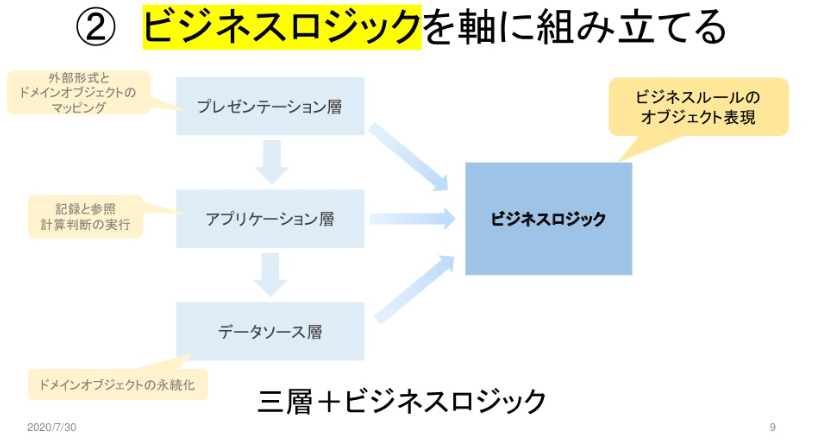
-
一般的な3層から、複雑なビジネスロジックは切り分けて実装する
-
ビジネスロジックを抜き出して、そこを軸にする。
-
ビジネスロジック→複雑の権化
・ネストif
・膨大なswitch
3層は作るが、ビジネスロジックは独立した
カタマリにしてしまう。
三層+ビジネスロジックにする。
-
ビジネスロジックを軸に組み立てる
三層＋ビジネスロジックに分ける
三層をビジネスロジックに紐づけていく
ビジネスロジックがパラパラと書かれていると複雑怪奇なものになてしまう。
-
②ビジネスロジックを軸に組み立てる
アプリを組み立てる側の視点から事業方針、ビジネスルール、ビジネスロジックのつながりを理解する。
視座を上げて関係の質を高めていくイメージですね。
-
アプリケーション：ビジネスロジック
↑
事業活動：ビジネスルールに基づく
↑
事業方針：ビジネスモデル
-
ビジネスルール？価格とか割引とか。事業方針の違いが現れてくるルール。ルールが扱う値を型として仕様化（実装）する。事業方針―ビジネスルール―ビジネスロジック
-
ビジネスモデル、ビジネスルール、ビジネスロジックのつながりを考え、ビジネスロジックを軸にソフトウェアを組み立てる。ビジネスルールで扱う型に注目して仕様化、実装する
-
ビジネスロジックを筋良く組み立てるために、アプリケーション/事業活動/ ビジネスモデルをつながりで理解する
-
ビジネスよりの人間が仕様は、はっきり示せるわけではない
ビジネス側を理解すれば必要なことも見えてくる。
③値の種類（型）でモジュール化する

-
ビジネスルールの3要素
ファクト：現在の状態、発生事象
ロジック：計算、判断式
リザルト：ファクトをロジックで加工した結果
-
値の種類（型）でモジュール化
ファクト：ビジネスで起こったことや現在の状態を表現する様々な値（型）
ロジック：計算・判断の式
リザルト：計算・判断の結果を表現する様々な値（型）
-
ファクト、ロジック、リザルトを型で表現する
-
フィールド、引数=ファクト
メソッド=ロジック
メソッドの返す型=リザルト
カプセル化してモジュール化することで
変更に強くできる。
-
ここで言うモジュールとは具体的には何のことなのだろうか。パッケージとか？
-
ビジネスルールをカプセル化してアプリケーションの型を定義→変更が容易になる
-
ファクト(input)、ロジック(計算・判断)、リザルト(output)
今やってるのはファクトの定義が曖昧だからリザルトがよくわからないものになってしまうのか…
-
ビジネスルールをカプセル化して型(モジュール)として定義する。のがポイント
-
* ファクト（フィールドと引数）+ ロジック = クラス
* リザルトを値（オブジェクトで表現する）
リザルトも値として表現するのは発想に至らなかったなあ…
③値の種類（型）でモジュール化する
-
AppStream+EnterpriseArchitect+RDRA
→オンラインで使える様にしようとしている。
- 全てを一気に変えるわけではなく段階的改善を並行的に継続して進めていくというのがCCSR
- 個人のスキル、チームの振る舞い等も含めて、継続的・並行的・段階的改善しようというのが CCSR
参考
正しいものを正しく作る塾勝手にRDRAを語る夕べで語られたことまとめ
要件定義・仕様化・実装の継ぎ目をなくすCCSR開発手法
JIG
JIGの紹介
CCSRを実現するRDRA活用法
発表資料
発表内容とtwitterの反応
今日の問題意識
-
大きな手戻りを起こさない繰返し開発の開始点は？
- MVPを繰り返し開発でつくり始める前に、大きな手戻りを起こさない開始点がある。RDRAを使った要件定義でその地点まで持っていく
-
BUC：ビジネスユースケース
BUCをプロダクトバックログの単位とする
-
各ステークホルダーが共通してみれる単位＝RDRAのビジネスユースケース
-
ビジネスユースケースって具体的にどんなんやねんという想像がついていない
-
なぜ、BUC をバックログの単位とするか。
BUC が、価値や責務を満たすもので、テストが管理しやすい単位だから。
-
BUCを単位とする理由
・BUCは管理単位として管理しやすい
- BUC単位で関係部署と認識を合わせる
- システムテスト・結合テストをBUC単位で行う
- BUC単位でモデルを最新化する
・システムの今を伝える 開発段階から作ったものをメンテしていく
- 最新を維持する
-
BUCの単位でポコッと取り出して改修して戻すの良さそう
-
計画的な手戻りの考え方
MVP(Minimum Viable Product)を使って考える
-
MVPの最低条件
「顧客に価値を提供できる最小限の製品」を届けるためにクリアすべきことがある
-
いきなり「価値の出せるようなもの」というわけにはいかない
-
仮説検証型アジャイルとよく似た図だった
正しいものを正しくつくるための「仮説検証型アジャイル開発」とは？ 市谷聡啓氏が語るPOの戦略 -
MVPの前段階で十分な実験が必要だしその実験の為のツールとしても要件分析仕様化を回していくということかな。この段階ではアンコントローラブルで破壊的な手戻りが発生するけど、MVPを抽出できた後は秩序的な手戻りでイテレーティブな開発ができるであろうと
-
システム開発現場は常々バベルの塔造りの現場のようだと考えていたけど、コミュニケーションを清流化する手法をもっと学ばないとだな…
コミュ力と言うよりは、コミュニケーションのテクニックを高めていくのが大事
-
実装しても要件は決まらない。
実装して決まるのは仕様
-
実装で決められるのは仕様であり、要件ではない。
-
実装して要件が決まりますか？決まらないでしょ、決まるとしたら仕様でしょ。首がもげそうなほど頷いてる
-
実装で見えてくるのは仕様。
要件は実装すれば見えてくるものではない。
-
アジャイル開発で「要件を最初に決められないよね？」という話をする人がいる。実装すれば決められるというが、実装しても要件はわからない。実装で分かるのは仕様。
-
バリエーションはビジネス上のパラメータ。自社倉庫/外部倉庫などもそう。
-
MVPの価値は「仕様」策定の学習。
-
理論は凄くよくわかるのだけど、どう実践したものかと頭を悩ませる
-
神崎さんのお話、すげー論理的だ
要件とか仕様って「誰々が言ったから」みたいな力学で決まっちゃったりするけど、そんなんじゃなくて、関連によって「これがこうだから、それはそうなるよね」って説明できる、って感じか
-
要件定義をスムーズに進めるための進め方
フェーズ１：議論のベースを作る
フェーズ２：要件の形を作る
フェーズ３：ビジネスルールの明示
-
RDRAをザッとやって見積りを作る。
コレやると、ある程度システムイメージが固まったり、ここは難しくてリスクが高そうとかが分かったり、関連するものが多いので複雑になりそうが見えてくるので、オススメ。
勘と経験と度胸だけに頼らなくて良くなる。
-
RDRAでの考え
・情報を変えると手戻りが大きい
・バリエーションの変更は手戻りが大きい
-
「情報」や「バリエーション」の変更は手戻りが大きい
-
基本的に静的な構造を変更すると、手戻りが大きくなりますよね
それらを使うロジックとかインターフェースはまだ比較的コスト低いと思うんですが
-
手戻りを大きくするもの
→繰り返しは手戻りが発生する。
依存するものが多いと手戻りが大きい
→情報を変えると手戻りが大きい
→バリエーションの変更も手戻りが大きい
情報、状態、バリエーション条件の変更はかなり手戻りが大きい
-
依存されているものの変更は手戻りが大きいとなるので、情報とバリエーションの変更は手戻りが大きい。
なので、そこをある程度、堅く作っておくことで、手戻りを小さくしたい。
-
要件定義==システムのスコープを決める
要件定義==仕様化の土台を作る
※すべてが固まるわけではなく分からない部分を
明確にして暫定仕様が何なのかをはっきりさせる。
-
十分知ってるシステムはやりながらでも大丈夫というケースもある。
対象が分かっていないものは深堀りしたほうが手戻りは小さい
暫定使用は手戻りになるのでこれを明確化することが必要→正式になる(仕様が変わるといわれる
-
対象のことがある程度わかっているのであれば、整合性をとるところまで深掘りしなくても良い場合もある
-
暫定仕様が出せるぐらいの要件定義をしないと、大きな手戻りが起こるリスクを持つ。
-
実装すれば次の仕様化の知見を得られる。
＊せまく深くも必要
-
広く浅くやっても要件は見えてこない。
-
UC複合図と情報と状態の整合性を取るところまでRDRAで分析をすると、要件の精度が高まるため、手戻りを小さくできる
-
仕様は変わっていない。暫定仕様のままで、正式仕様が見えていない。
-
仕様変更が多い☓
正式仕様が見えてない○
-
「仕様が変わる」=整合性を取ることによって見えていなかったものが見えて暫定仕様が正式仕様に変わっているだけ。暫定仕様であるとマーキングしておくとよい
-
暫定使用をマーキングすることが重要
暫定仕様は正式仕様にしないといけないし
それをトレースして影響範囲を明確化する
そうしなければ影響が分からない
-
MVP(BUC)を5万ステップとか10万ステップとかのボリュームで作ってしまうと、何が暫定仕様なのかわからなくなってしまう。
-
要件定義とか仕様の定義とか、まずもってそもそも「やり方」が決まらなくて、そこを決めるのにコストがかかるし結局は曖昧なまま走りはじめがちだと思うので、まずはRDRAのような具体的なやり方に乗っかるのは、ビジネスに時間やリソースを集中できて良い気がする
-
いい感じのスコープでいい感じのフレームワークで要件定義をして、定義された要件を随時実装によって検証することで仕様化しを回していく。ラドラとかいうフレームワークを使うと要件定義を構造化して扱えるのでここをきっちりやるとかみたいな議論ができる、のかな…。
- Q：「仕様を明確に記述」する方法は何故Javaなのでしょうか？他の言語でなくJavaである理由があれば教えていただきたいです。
-
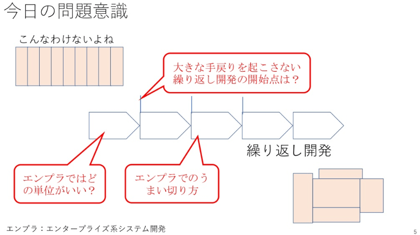
今日伝えたいこと
-
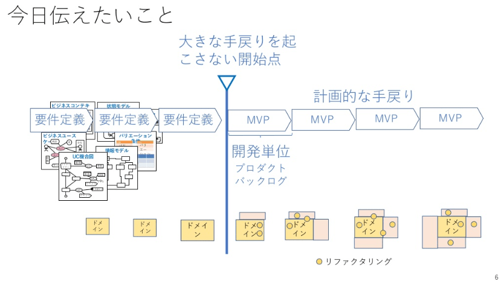
ビジネス上の価値の単位
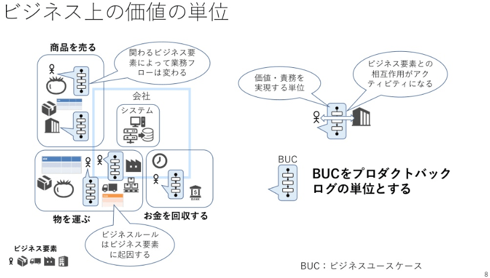
BUCをプロダクトバックログにする
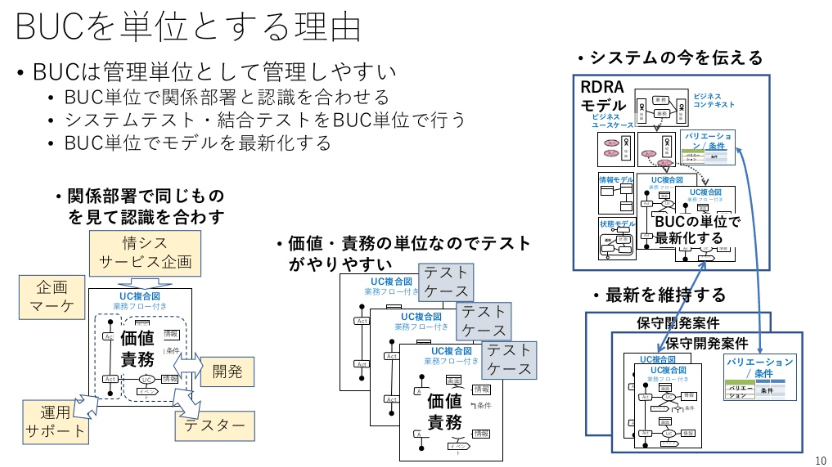
MVPの最低条件

MVP
MVPをCCRSに当てはめる
エンプラにMVPを当てはめる
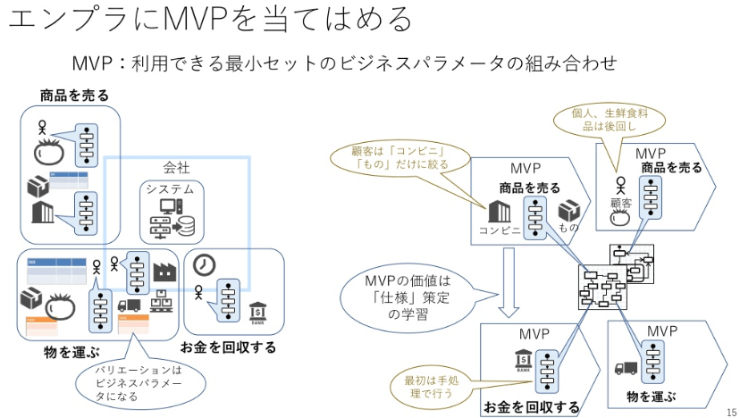
要件定義をスムーズに進めるための進め方
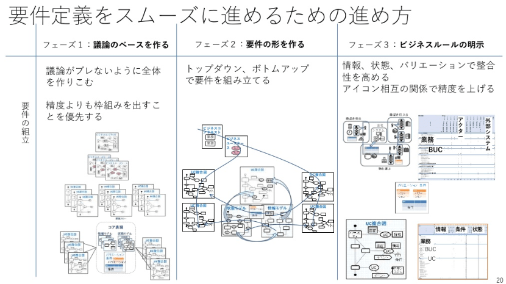
手戻りを大きくするもの
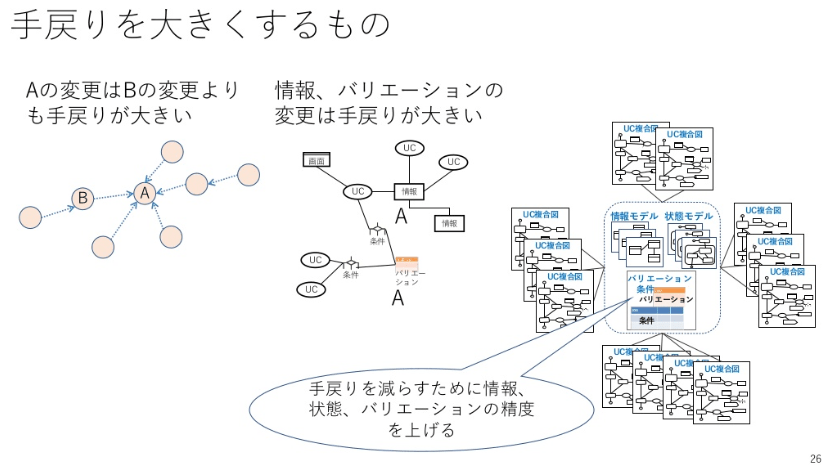
どこまで要件定義を行うか
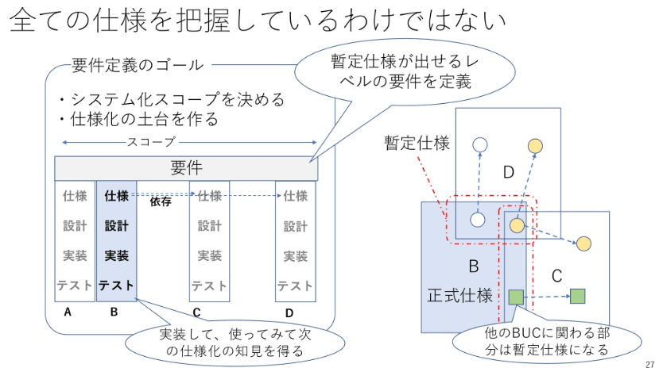
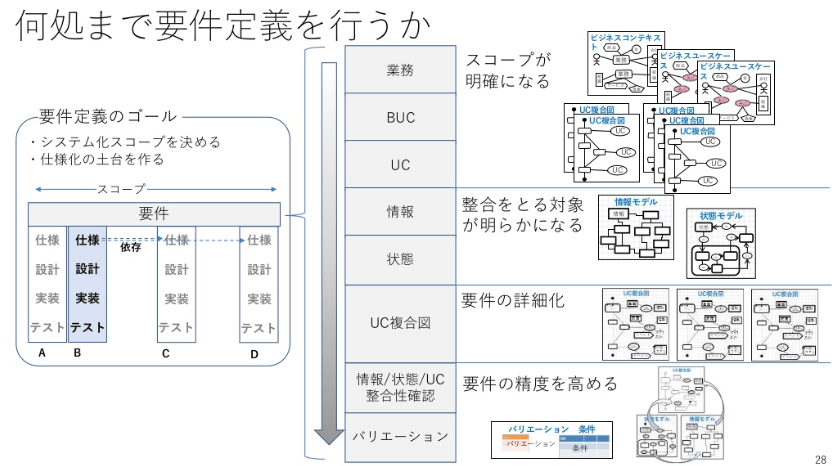
暫定仕様をコントロールする
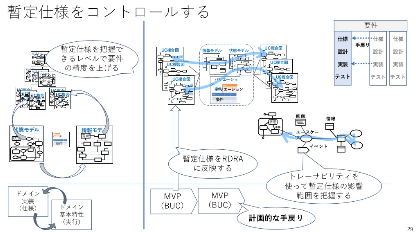
参考
勝手にRDRAを語る夕べで語られたことまとめ
正しいものを正しくつくるための「仮説検証型アジャイル開発」とは？ 市谷聡啓氏が語るPOの戦略
Making sense of MVP (Minimum Viable Product) – and why I prefer Earliest Testable/Usable/Lovable
RDRA2.0 ハンドブック 図書館サンプル
この図書館サンプルをどういう流れで実装したかの動画
QA
-
静的型付言語はかなり厳密なので、仕様を固めるうえでは優れている。
例えば、enum
RDRAでバリエーションを表現する際に威力を発揮する
仕様の言語化という点でプラスに働く
-
静的型付言語は仕様を固めるうえでかなり厳密なので仕様を固めるうえでは優れているのでJavaサイコーらしい
-
ジャッバは冗長なのでむしろそこが「明確に仕様を記述する」という面に関してプラスに働く
- Q：CCSRを実際にやってみてどのような変化があったかの実例を伺いたいです。Beforeがどういう状態の開発チーム・体制で、CCSRの活動の中でAfterがどうなったか、など。
-
人間が気にしておける範囲って限られてるし、日によって、なんなら数十秒前ですら関心事が変わってたりするので、整合性を人間ベースで担保するのは無理ですよね
そこは何かしらのツールに頼りたい
-
エンジニアがつながりをきちんと理解できることが大きいCCSR
軸があって周辺がある。
ユースケース一覧というものは弊害になりうる。
軸が見えればそこを中心に肉付けしていける
→軸を明確化する手法がかなり大事
-
CCSR をやることによって、エンジニアが繋がりを意識して範囲を限定せずに考える様になるのがメリットと増田さん。
確かに、繋がりを意識していく中で守備範囲が広がって主体性が上がっていくという効果はあると思う。
-
一覧があるとフラットに見えてしまう。が、軸をしっかりもつと品質も上がるし無駄も減るしスピードも上がる（即効性があるとは言わない）。
-
「ドメインとかいう言葉を使わなかったのは現場で伝わらなかったことが多かったから」つらい話だ…。
-
"抽象化やドメインという言葉は現場でなかなか伝わらないことがある。" →なので軸
-
「軸」と言った方が「抽象化」とかより現場で伝わる。
「ドメイン」といった言葉も使わなかったのは、「ビジネスルール」とかの方がやはり現場で伝わる。
と、増田さん。
- Q：多くの開発において、イテレーションを始める前に「要件・ドメインの仕様化・実装」ができていない理由は何だとお考えでしょうか？ RDRAを知らないから、ドメインモデリング、分析モデリングを知らないからでしょうか？
-
チーム、工程が分かれてるから。
-
「ユーザーストーリーではスコープが狭すぎて全体の整合性がとれない」分かる
-
アジャイルにやり出すとスコープが分断されるため、全体が見えない。
逆に全体からブレークダウンしていくやり方だと工程で分断されるイメージがあるなー。
-
みんなで集まって決める。モブワーク（モブプログラミング）的な活動も重要そう。
-
チームが分かれてる、工程が分かれているから、要件化/仕様化/実装がうまくいかない。アジャイルでは見ている範囲が小さすぎる。
-
技術者がリードする形でステークホルダーみんな集めてその場で決めていく
- Q：JIG はいわゆるエンタープライズシステムのロジック量/クラス量でも有効なのでしょうか？ボリュームが大きくなると「視覚的な理解」ができる範疇を超えてしまいませんか？
-
従来の様に一覧表作って作業分けて個人ワークするのではなく、みんなで集まって開発していく。
みんなで開発すると効率悪そう感を感じるかもしれないけど、目指す方向や業務知識のしっかりとした共有ができるので、その結果効率が良くなるんじゃ（計測はできてない）と思っている。
-
JIGで把握できない粒度のモジュールなのであれば、それは人としても理解できない粒度だと思うので、サブモジュールに分解していくのが当然のアプローチになるだろうなー
-
JIGで可視化した結果「こりゃ概念とその関連を整理しないと、このままじゃ人間が把握できるもんじゃないねー」って事実が突きつけられて、整理する動機づけになる、って効果もあるのかもしれないですね...
- Q：曖昧な商習慣など、明文化不可能 or 自社の努力では変更不可能なビジネスルールがあった場合、仕様化しなかったルールの理解はJIGでどう表現するのでしょうか？
-
結局のところソフトウェア開発、システム開発を行っているのであって、それを設計・実装する当事者が中心となって開発工程の為に漏れなく必要な事を行うということ
- Q：仕様化でJavaを使うことと、Javaでプロトタイピングすることとの違いは何でしょうか？
-
Javaを「仕様を表現する」「プロトタイピングする」をダブルユースする
-
違う目的のものをたまたま（意識的にではあるが）使っているというだけの話
-
仕様化とプロトタイピングは違う買うどうだよね。たまたまジャッバを2つの用途で使っていっぺんにやってるだけだよ
-
仕様化とプロトタイプのツールとして一つの言語でいけるなら、そのほーがコスト低くいけるケースもあるかなー
-
ドメインロジックを記述したDSLとしてのJavaがそのままシステムとして実行可能だとしたらそれはDDDの一つの到達点だよねぇ
- Q：CCSR手法の有効性は、どこに色濃くでてくるのでしょうか？ 不具合が減る、というところでしょうか？
-
無駄な作業が減る。無駄な作業に気が付く。
無理が減る。
-
無駄な作業だったことに気がつく
-
「なーんや、書いたけど…徒労やったしボツやボツ！」
みたいなことが減るんかな？
-
やばいところの戻りを早く発見することができる。
-
コミュニケーションが減る というよりは
情報密度が上がっているんじゃないかなー？
で、相手に伝える時間が少なくなる＝コミュニケーションが減る
につながっているのでは？
-
初期段階で、粗くても精度の良い概構造を固めるのは、有効よね。
-
後でとんでもない抜け・漏れが出てくるリスクを減らせる
-
RDRAで全体の整合性を取っていない中で進めていくと、あとから「これどうなってます?」みたいな手戻りが減るんだろうなきっと。
一回、必ず土台にあがるというか…
-
ユニットテストは自動化されているので、そこまで無駄ではないと思いますが、結合テストとかそっちのレグレッションが追い付いていないので設計をきちんんとできていないことによる弊害が非常に大きいと思いますね。
-
自然言語で仕様を記述するのは人類には早すぎるというのはちょこちょこ言われてはいたし、それに対する解放の一つとしての形式手法とかなんだろうけど、そのまた別の解という趣きがある
-
ユニットテストを無駄に書き過ぎると邪魔になるってわかる
-
ここの仕様がよくわからないからドキュメントを作ろう、なんてのが都度発生するのが「無駄なこと」という理解
-
ScalaでJIGを使いたい方は、こちらをお試しいただければ…
sbt-jig
- Q：要件定義・仕様化・実装で分けているのは何故でしょうか？
-
設計と実装は同じ
-
分析とかモデリングより、仕様化という言葉を使うことが多い
-
「要件定義」「仕様化」「実装」
それぞれ言葉から何をしたいかが分かる
-
要件定義と実装は近くないとね
-
要件定義と実装は近い
-
分かれて分類できているから繋げられるという佐藤さんのコメント、よく分かる。
基礎ができてないと応用編はできないよね。
-
Javaを選んだ理由に「強い型付け」を挙げられていたけれど、実際には「(強い) 静的型付け」の方が理由としては強いのではないかしらん。強い動的型付け言語は、増田さんの流儀に合わなそうに感じてる。